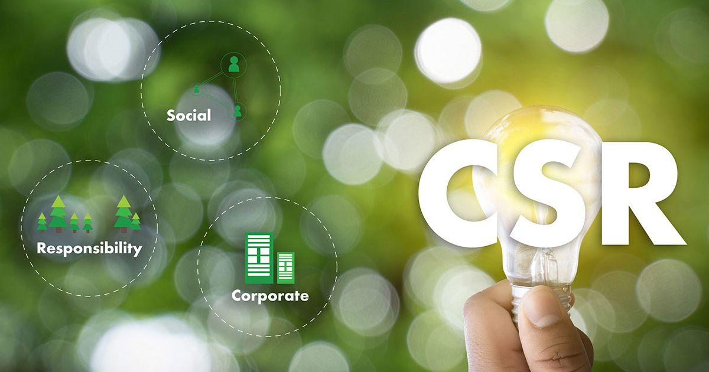

Get Involved
Together, we can create a world of opportunity and self-reliance.
Join Us in Our Mission
There are many ways to support the work of Coodu Trust. Whether you are an individual, a corporation, or an institution, your contribution can help us empower communities and build a sustainable future. Explore the options below to find out how you can make a difference.

Partner with Us
Collaborate with us on CSR initiatives, institutional partnerships, and large-scale development projects. Let's work together to achieve shared goals and create lasting impact.
Become a Partner
Volunteer
Lend your time and skills to make a direct impact. We welcome individuals and groups to support our fieldwork, assist with events, or provide professional expertise.
Volunteer With Us
Donate
Your financial support fuels our programs and allows us to reach more communities in need. Every contribution, large or small, helps transform lives.
Make a Donation